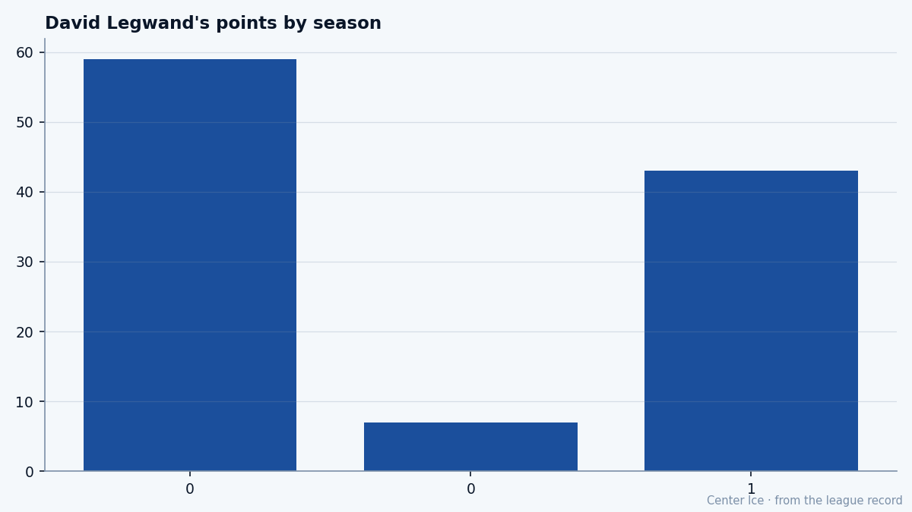

Second Overall, Finally: the education of David Legwand
Nashville traded two picks to make him the second name called in 1998. Six seasons in, the passer has started shooting, and the franchise has its center.
 Tomáš VránaProfile writer · The Sweater
Tomáš VránaProfile writer · The Sweater David Legwand89 grew up in Grosse Pointe, and in 1993 and 1994 he played for the Detroit Little Caesars at the Quebec International Pee-Wee Tournament, a boy from the same youth hockey system the Red Wings draw from. The club that drafted him was
David Legwand89 grew up in Grosse Pointe, and in 1993 and 1994 he played for the Detroit Little Caesars at the Quebec International Pee-Wee Tournament, a boy from the same youth hockey system the Red Wings draw from. The club that drafted him was  Nashville Predators, a long way from that world, and he has played nowhere else in the league.
Nashville Predators, a long way from that world, and he has played nowhere else in the league.
He is 24, six seasons into the job Nashville bought for him, and this is the winter it has all come out. He is the club's leading scorer with 28 goals and 43 points in 29 games. Nashville Predators has won five straight and sits third in the Central at 13-8-4. The Bureau's Book grades him 87 overall, up 3 on the Development Index, and the Morale Scale reads 97. The man the franchise gave two picks to has started to look like the reason they did.
The change is in the shots. Legwand was drafted as a playmaker and spent his first seasons passing. Last season he had 22 goals and 37 assists in 41 games, a careful center's balance. This year the numbers have flipped: 28 goals, 15 assists in 29 games. The assists dropped away and the points went up anyway.
The road through Plymouth
His hockey education began at Grosse Pointe North High School and ran through the Plymouth Whalers of the OHL, the junior club across the river from the house he grew up in. The year before the draft he scored 54 goals, assisted 51, and collected 105 points, and the league gave him the Red Tilson as its most outstanding player.
That summer, Predators general manager David Poile dealt his first- and second-round picks to San Jose for the second and 85th selections, and used the second on Legwand in the 1998 draft. Then came the mononucleosis in training camp, and a season's wait; he went back to Plymouth, came up the next year, and settled into the job of being an expansion franchise's first real center.
The evidence that he could finish has been on the shelf since December 23, 2000, when he scored on a penalty shot in overtime against the Rangers, the first goal of that kind in league history. It took him a while to want to do it more. The Book's skating grade is 98 and the agility 93; once the shot was in his head, he could get to the net faster than anyone he was playing against. The question was whether he would keep shooting instead of looking for the pass.
The passer starts shooting
The club's scoring list shows how much of the offense he carries. He has 15 more points than the next man on it.
| player | gp | goals | assists | points |
|---|---|---|---|---|
| David Legwand | 29 | 28 | 15 | 43 |
 Scott Walker84 Scott Walker84 | 24 | 13 | 19 | 32 |
| Vladimir Orszagh | 29 | 9 | 21 | 30 |
 Oleg Tverdovsky81 Oleg Tverdovsky81 | 26 | 4 | 25 | 29 |
| Martin Rucinsky81 | 29 | 7 | 21 | 28 |
He is on the ice more than he has ever been, 24.6 minutes a night against 21.5 last season, and the extra ice is spent at the net. His points across his two regular seasons and last spring's playoffs sit beside each other in the Bureau's season lines.

The middle bar is six playoff games from last spring, when he put up 7 points; the outside bars are the regular seasons, 59 points in 41 games then 43 in 29 now. The passing center's production did not collapse when the assists did. It moved down the middle of the ice instead of wide.
He is a center, and Nashville's own second line can go through him or around him, but the offsetting assist total says something about the room. His best teammate by the Book is the goaltender,  Tomas Vokoun92, graded 90. The forwards around him grade 79 and 80. Nobody else on the club is making the play to him; he is the play. When the puck ends up on his stick in the high slot, the only responsible outcome is to shoot it.
Tomas Vokoun92, graded 90. The forwards around him grade 79 and 80. Nobody else on the club is making the play to him; he is the play. When the puck ends up on his stick in the high slot, the only responsible outcome is to shoot it.
"I grew up across the river from the Red Wings," he says in the room's telling, and you can picture the shrug. "You watch them and you think that's where you're going. It didn't work that way. But here nobody cares where you're from. They care if you win the battle."
The money and the room
Nashville pays him $8.37M and has him for two more years, the contract of a franchise center on a club that spends carefully. The Book's profile of weakness is the parts of the game he is not paid for: physical play grades 50, fighting 50. He wins with his legs.
The room knows what it has. The men around him grade lower than he does and say less about it. He is the first one at the rink, in the telling, and the last one to bring up his own numbers, which is how a 28-goal winter stays calm in a building where a 5-game run matters more than a column of goals.
He was the first player in league history to score on a penalty shot in overtime, six winters ago against the Rangers. The league has since had nothing to write about him that required dramatic noise. He scored, he defended, he took the minutes, and Nashville waited for the year the goals would catch up to the skating. This is that year: 28 goals and 43 points in 29 games, and the club that traded two picks to get him sits third in the Central at 13-8-4. The boy from Grosse Pointe never played a game for the Red Wings. The franchise he landed in has its center.